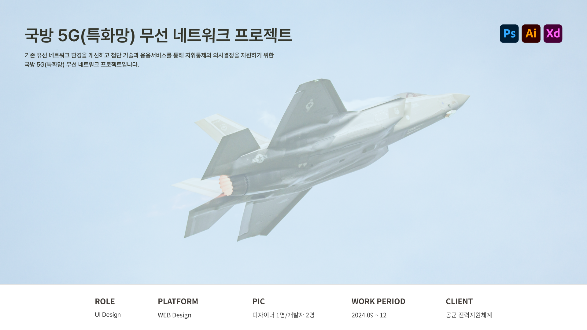

국방 5G(특화망) 무선 네트워크

프로젝트 개요
프로젝트 목표
표준 체계를 확립하여 업무의 효율성을 높이고, 사용자의 신속한 의사결정 판단을 지원하여 군수 행정의 체계적인 환경 구축을 목표로 한다.
디자인 목표
방대한 데이터가 제공되는 환경에서도 사용자가 필요한 정보를 직관적으로 확인하고 여러 체계에서도 일관된 정보와 동일한 경험을 제공한다.
프로젝트 타입
기업 내부 웹 서비스
프로젝트 유형
B2B SaaS Platform, UI/UX Design, Brochure Design
담당업무
담당 범위
UI 디자인 · 표지 디자인 · 개발자 협업 · 디자인 QA 담당
웹 UI설계
제공 된 화면설계서를 토대로 클라이언트의 요구사항을 분석하여 공통의 UI요소를 제작-정리 후 서비스 가독성과 정보 탐색이 용이하도록 정보의 시각적 위계를 구성하여 일관된 UI를 제공을 위한 작업 진행
사용설명서 커버 디자인
통일감있는 디자인을 통해 제품의 가치에 대한 직관적인 정보 식별과 신뢰감을 시각적으로 표현하여 발주까지 진행
그 외 프로젝트 내 콘텐츠 제작, 배포 후 피드백을 반영하여 UI개선 외 다수의 업무 진행
*본 프로젝트는 NDA(비밀유지 계약) 및 기업 보안 정책을 준수하기 위해 제작 화면은 공개가 불가능합니다.
저작권 및 지식재산권은 계약상 권리 귀속 주체에게 있으며, 본 자료는 기업 제출 및 채용 검토 목적으로만 제공됩니다.
AI학습·무단 전재·복제 및 외부 배포를 금합니다.


© 2026 Leesujin. All rights reserved.